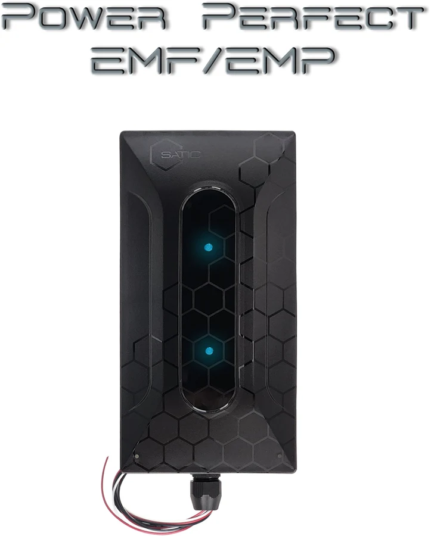
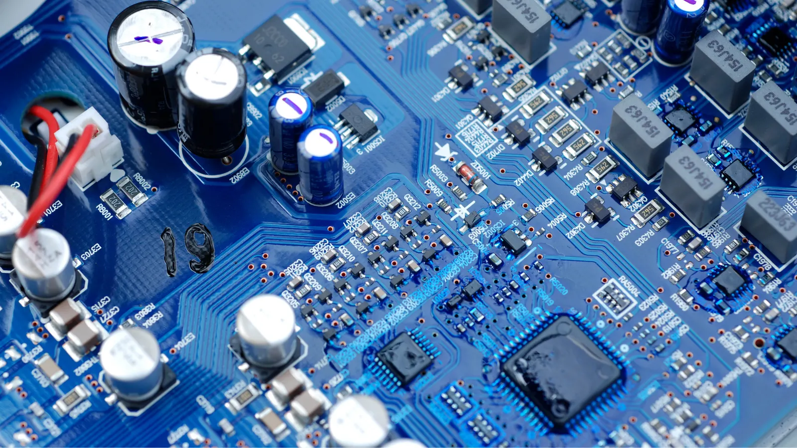
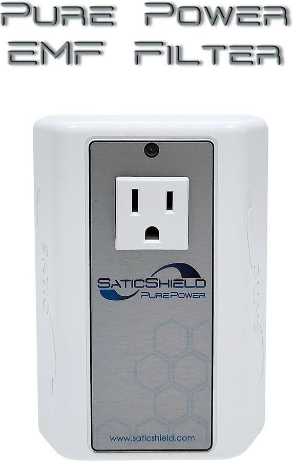
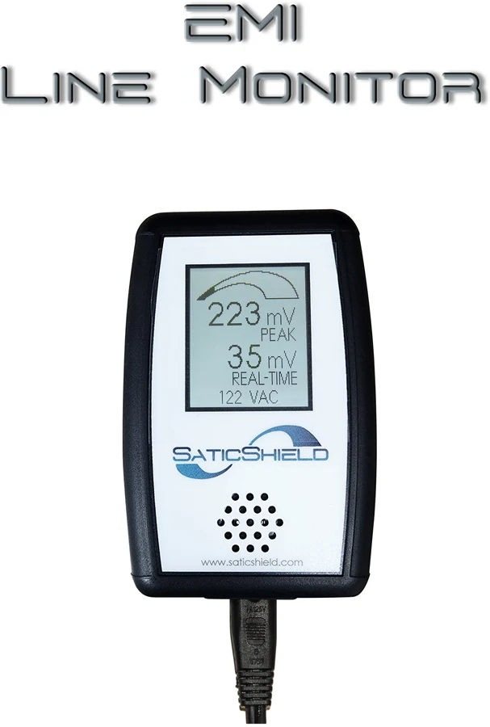
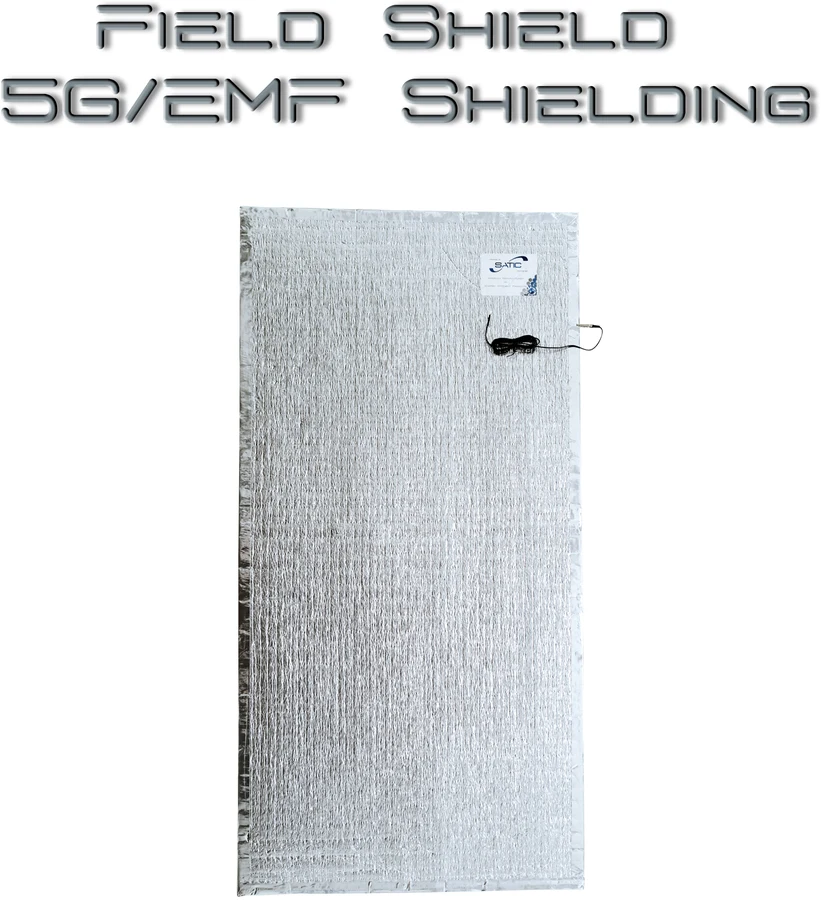
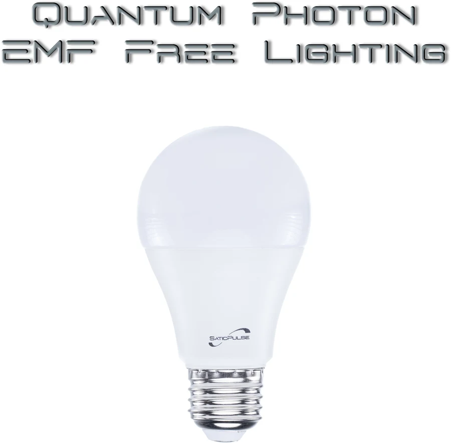
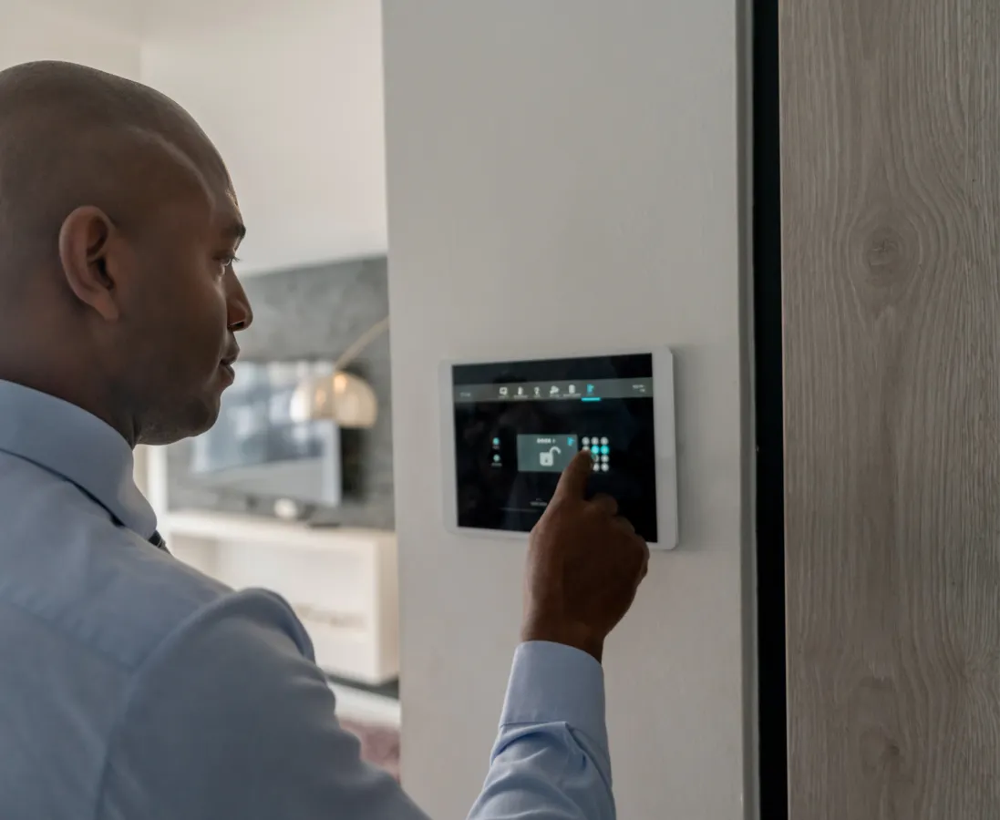
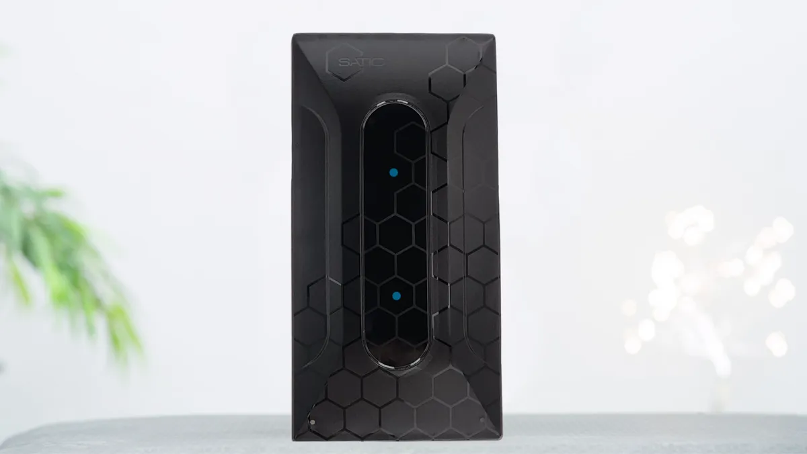
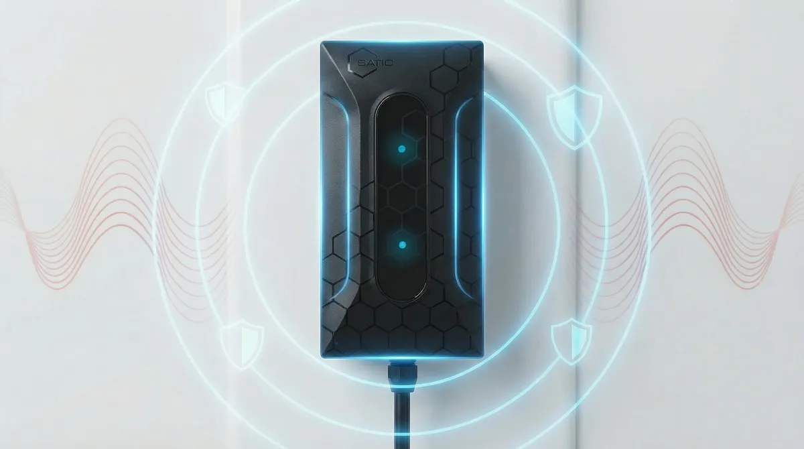

It begins with awareness
You can’t improve what you can’t see. Start by understanding and measuring electrical line noise.
Modern devices changed the way electricity moves through our homes. SaticShield engineers products to help measure, filter and manage the electrical environment—so families can move forward with greater awareness and confidence.

Phones, LEDs, smart appliances, solar equipment and countless electronics reshape the electrical environment every day. The result can include unwanted frequencies and interference—often called dirty electricity.
You can’t improve what you can’t see. Start by understanding and measuring electrical line noise.
Everyday electronics can introduce harmonics and interference back into your home’s wiring.
SaticShield builds plug-in, wire-in, monitoring, shielding and lighting solutions for modern power.

“Create a universal solution—and lead the shift toward a clean-power paradigm.”
SATIC means Sinusoidal Waveform Technology Incorporated: engineered clean power. Since 2008, our privately owned team in Missoula has pursued a simple idea—that better awareness and thoughtfully engineered products can help people conserve health, natural and financial resources.
Meet the people behind the mission ↗Start where you are. Measure your environment, choose the right level of filtration, and build a whole-home approach over time.
Whole-home energy management, surge and EMF protection in one engineered system.
Explore Power Perfect ↗

See and hear line interference in real time, before and after filtering.
View monitor ↗

High-efficiency LED lighting designed for ultra-low harmonic distortion.
View lighting ↗We love what we do, back our claims, honor our warranties and stand behind the products we’ve made with pride.
THE SATIC TEAM · BIG SKY COUNTRY


Begin with the EMI Line Monitor—or talk with a clean-power specialist about the right solution for your home.